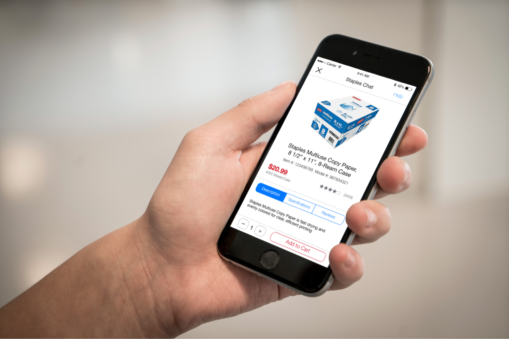
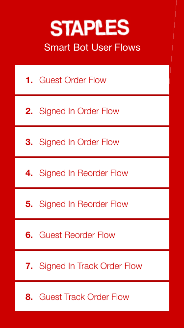
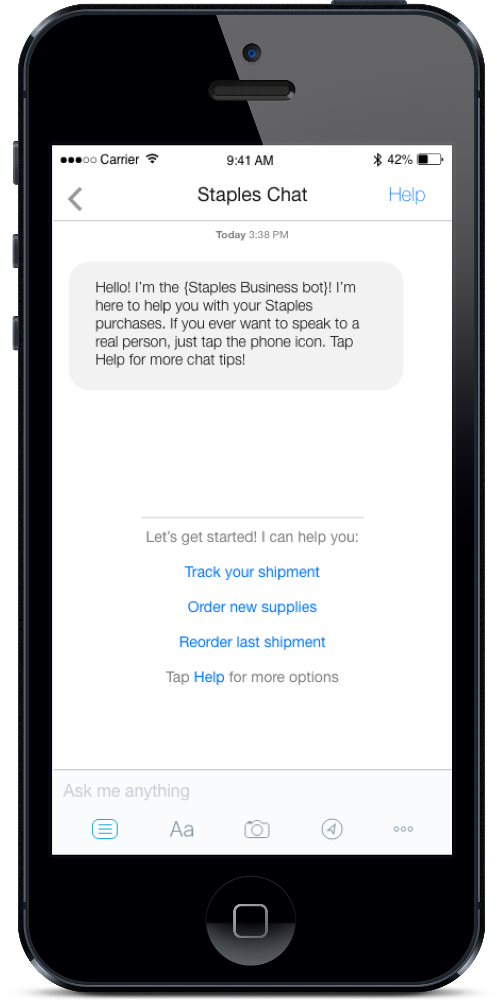
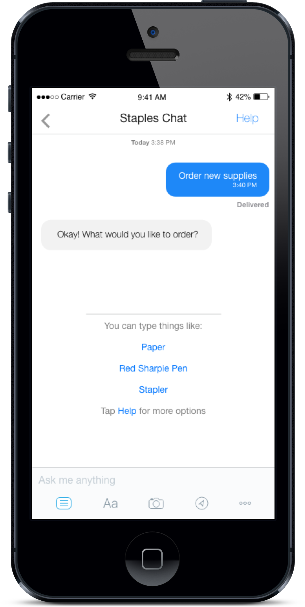

Staples Chat Bot
Conversational UI
Staples engaged T3 to help them rethink an iconic brand signature moment. The assignment was to rethink how the easy button could be turned into a more useful experience. The solution was to design and develop a "Staples Easy System." This system included a revamped hardware IOT Easy Button device as well as a Chatbot feature that could be initiated from the Staples native mobile app. This system, powered by Watson, would allow inputs as voice, text and images.

Guest Order Flow Examples
Early design research informed us that we should leverage the existing and commonly known Facebook Messenger design patterns
This system, powered by Watson, would allow inputs as voice, text and images.
Part of the overall UI design was determining the architecture of the quick-link guides that help streamline the conversation and reduce need to type when possible.

Use Case / Dialog Flow
Each of these flows were defined and developed as full conversational UI flows and mocked up in a clickable prototype to walk the client through the experience.


Reorder / Track Order Examples
Part of the overall UI design was determining the architecture of the quick-link guides that help streamline the conversation and reduce the need to type when possible.
-
Allows users to engage with Staples through a variety of methods that remove friction and is easy as talking or typing.
-
Removes the burden of customer service associates by automating and servicing more routine questions or orders.
-
Positions Staples as an innovator in its class relative to peers and competition.
-
Define agile sprint cadence and deliverable milestones.
-
Define conversation parameters (Entities, Intents, etc) and design the dialog flow.
-
Develop UI and screen flows with all paths and fallbacks.
-
Build prototype "vignette" flows for each use case with InVision (as well as experiments with live data using ChatFuel).
-
Stakeholder review and iterate based on feedback